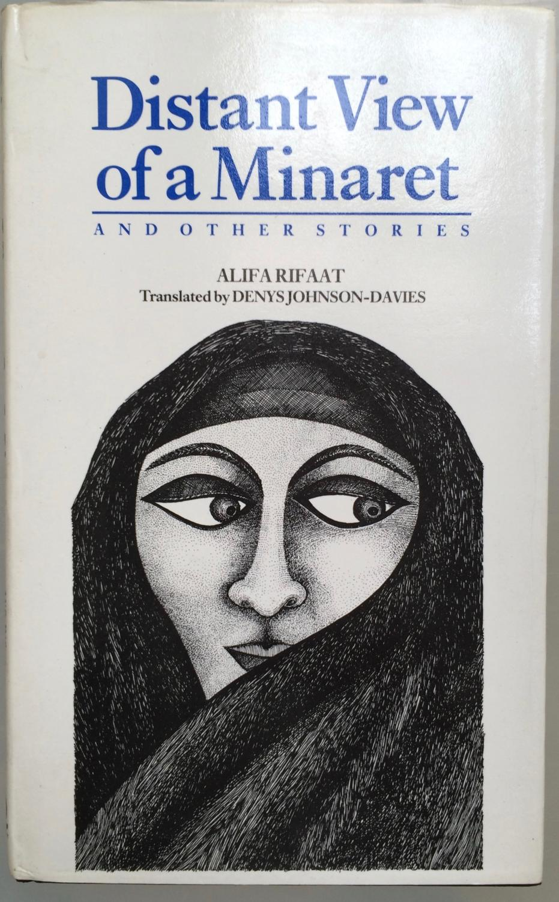
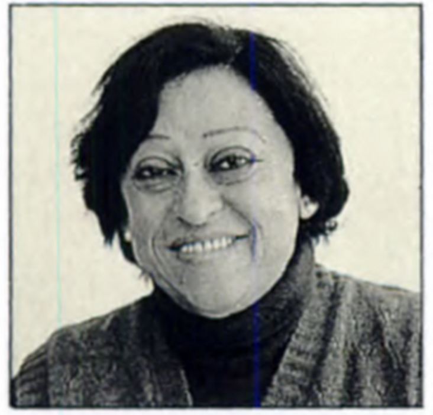
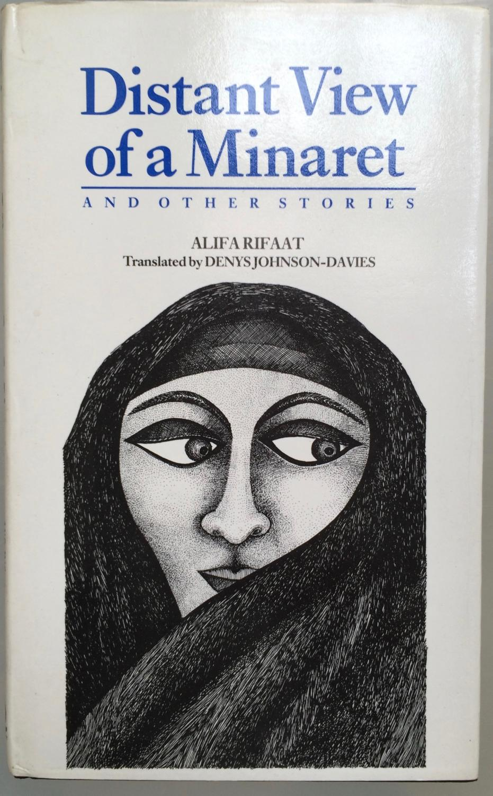

Story
We will read Rifaat’s story Bahiyya’s Eyes from the Collection Distant View of a Minaret and Other Stories. 

From the book blurb:
“More convincingly than any other woman writing in Arabic today, Alifa Rifaat lifts the veil on what it means to be a woman living within a traditional Muslim society.” So states the translator’s foreword to this collection of the Egyptian author’s best short stories. Rifaat (1930–1996) did not go to university, spoke only Arabic, and seldom traveled abroad. This virtual immunity from Western influence lends a special authenticity to her direct yet sincere accounts of death, sexual fulfillment, the lives of women in purdah, and the frustrations of everyday life in a male-dominated Islamic environment.
Translated from the Arabic by Denys Johnson-Davies https://www.theguardian.com/world/2017/jun/18/denys-johnson-davies-obituary, the collection admits the reader into a hidden private world, regulated by the call of the mosque, but often full of profound anguish and personal isolation. Badriyya’s despairing anger at her deceitful husband, for example, or the haunting melancholy of “At the Time of the Jasmine,” are treated with a sensitivity to the discipline and order of Islam.
We will read Rifaat’s story Bahiyya’s Eyes from the Collection Distant View of a Minaret and Other Stories. 
بَهِيّة Bahiyyah is an Arabic name for girls that means “brilliant”, “beautiful”, “radiant”.
Alifa Rifaat on the Dangerous Women Project https://dangerouswomenproject.org/2016/04/30/alifa-rifaat/
Banipal Magazine of Modern Arabic Literature. http://www.banipal.co.uk
Denys Johnson-Davies https://www.theguardian.com/world/2017/jun/18/denys-johnson-davies-obituary
Malti-Douglas, Fedwa. Men, Women, and God(s): Nawal El Saadawi and Arab Feminist Poetics. Berkeley: University of California Press, c1995 1995. http://ark.cdlib.org/ark:/13030/ft8c6009n4/
Ya Baheya, the Woman Behind the Legend. http://www.shira.net/music/ya-baheya-background.htm
Oyun Baheya, the Song. https://youtu.be/sb4ZNdLGeIo
Female Genital Mutilation. https://www.who.int/news-room/fact-sheets/detail/female-genital-mutilation and https://data.unicef.org/topic/child-protection/female-genital-mutilation/
Song: Do Naina aur Ek Kahani
Film: Masoom (1983)
Artist: Arati Mukherjee
Music Director: R.D Burman
Lyricist: Gulzar
Starring: Naseeruddin Shah, Shabana Azmi, Master Jugal, Baby Urmila,
Saeed Jaffery
Director : Shekhar Kapoor
| Hindi Lyrics | English Translation |
|---|---|
| Do naina aur ek kahanee(2) | Two eyes and one story, |
| thoda sa badal, thoda sa panee aur ek kahanee(2) | some clouds, some water, and a story |
| —— | —— |
| Chhotee see do jheelon me woh, bahatee rahatee hai(2) | In two small lakes, they keep floating/flowing |
| Koi sune ya na sune, kahatee rahatee hai | Whether anyone is listening or not, they keep telling the story, |
| Kuchh likh ke aur, kuchh zubanee | Some Written, and Sometimes by speaking out |
| —— | —— |
| Thodee sai hain janee hui, thodee see nayee(2) | A part of the story is known, but a small part of it is new |
| Jahaan ruke aansu, waheen puree ho gayee | Whenever the tears stop, that is where the story stops too, |
| Hai toh nayee phir bhi, hain puranee | It is new but its old at the same time |
| —— | ——- |
| Ek khatm ho toh, dusaree raat aa jatee hai(2) | As one night passes, it is time for the other night, |
| Hothhon pe phir bhulee hui, baat aa jatee hai | And those forgotten words cross my lips |
| Do naino kee hain yeh kahanee | That is the story of the two eyes! |
| thoda sa badal, thoda sa panee aur ek kahanee | some clouds, some water, and a story |
| Do naina aur ek kahanee… | Two eyes and one story….. |